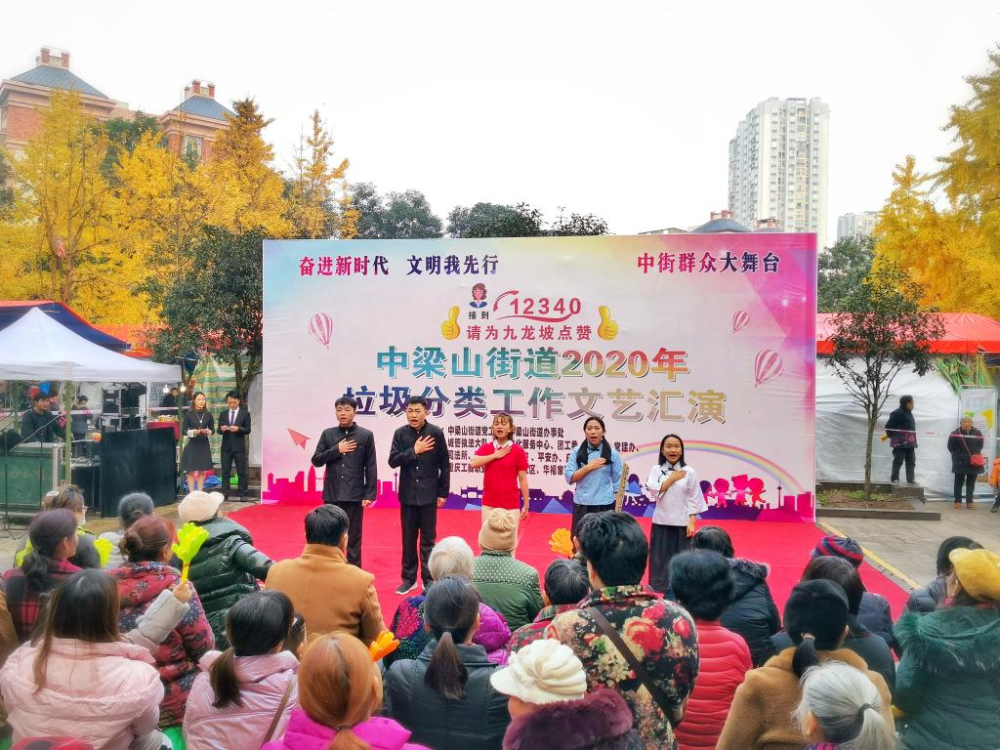
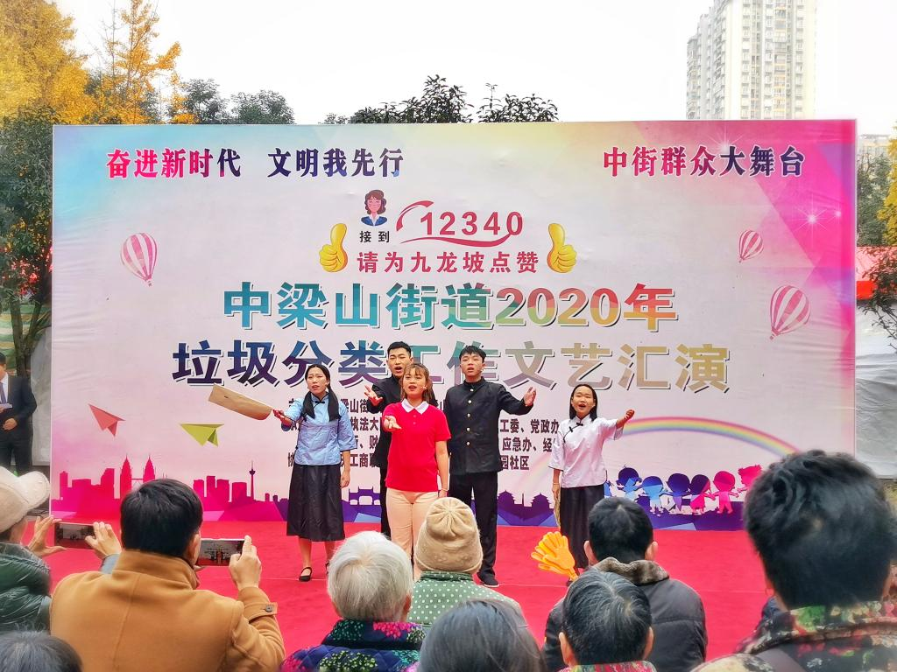

【供稿/开放教育学院】12月8日上午，我校开放教育学院学子志愿服务走进中梁山街道康苑社区，协助街道开展文明建设宣传工作。
活动中，我校青年学子为康苑社区居民倾情演绎了原创情景朗诵作品《我们》，呈现了一段跨越百年的时空对话。作品通过传承爱国主义精神，呼唤青年勇担时代重任，赓续青春蓬勃力量，赢得社区居民阵阵掌声。
本次活动将校园志愿服务与社区居民文化需求紧密结合，带领青年学生参与文明社区建设，有效丰富了社区文化。

